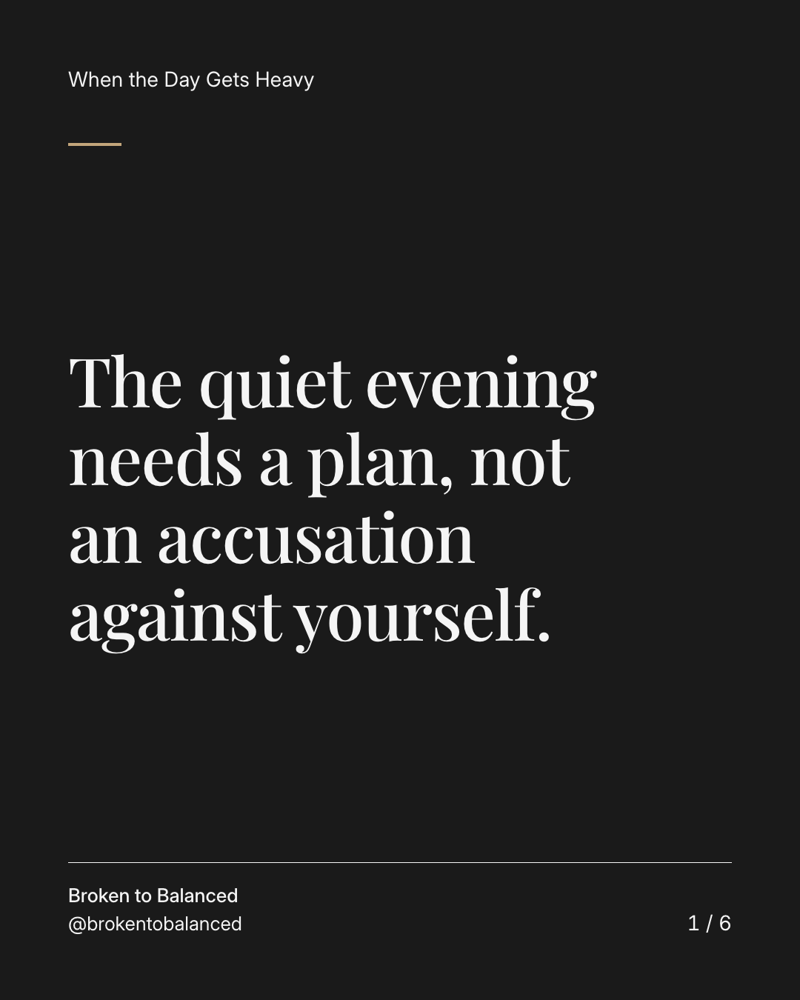
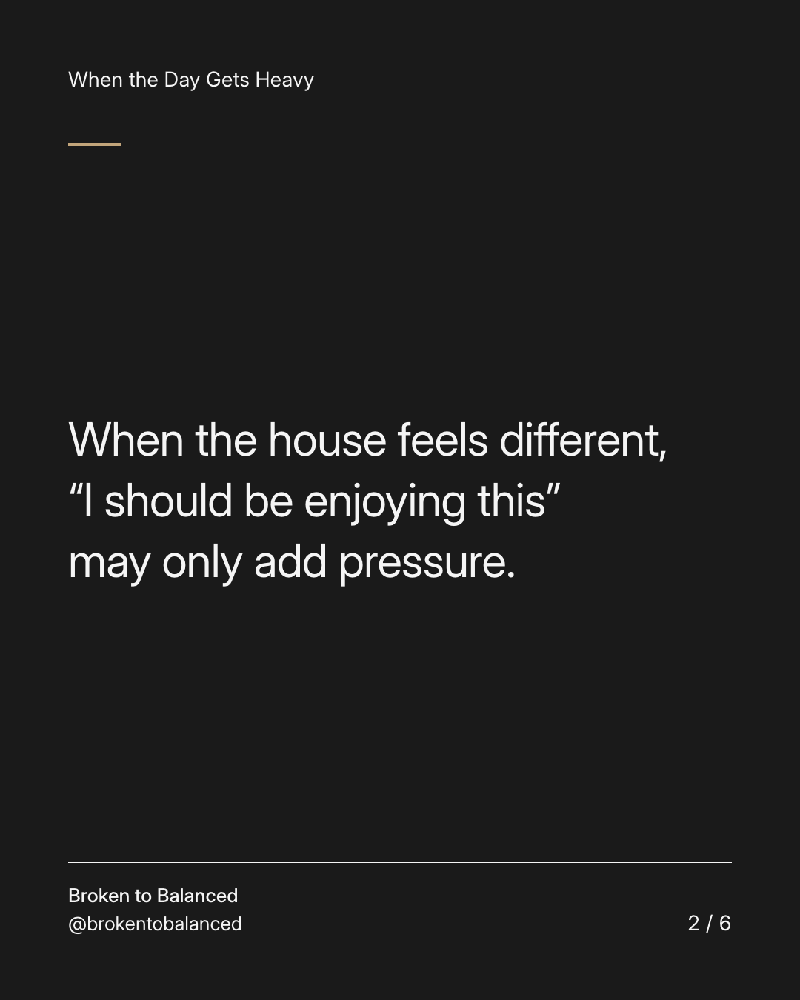
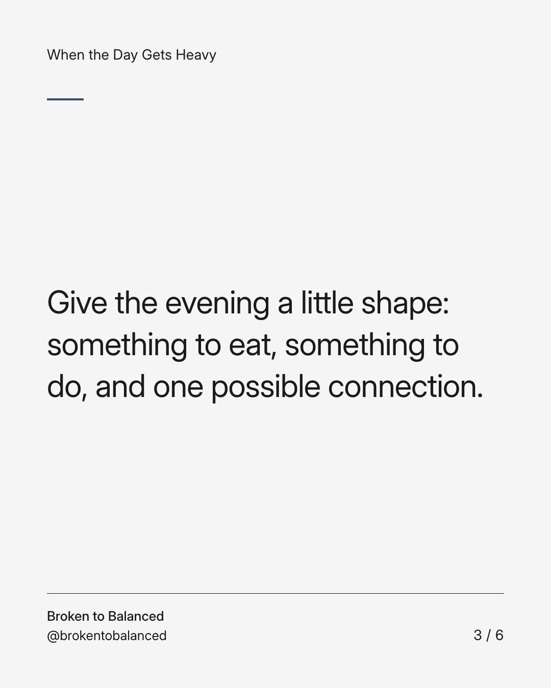
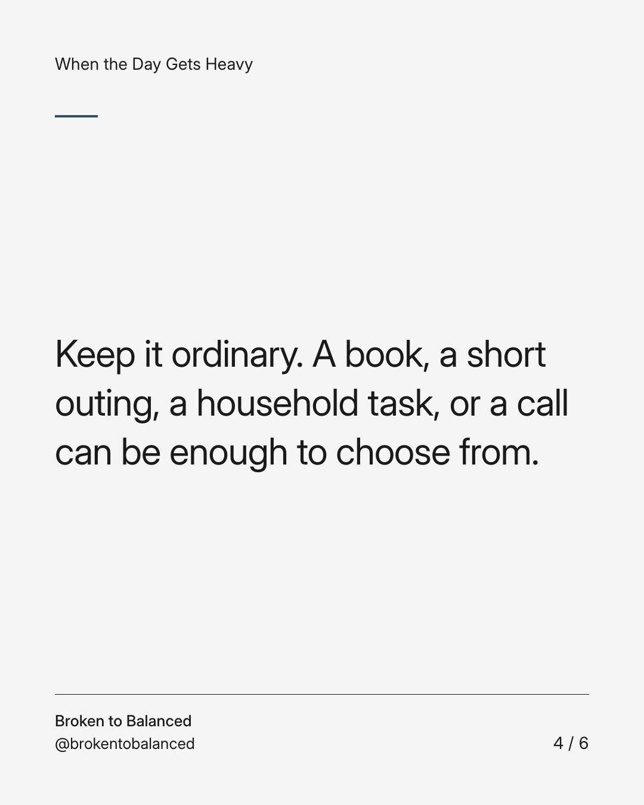
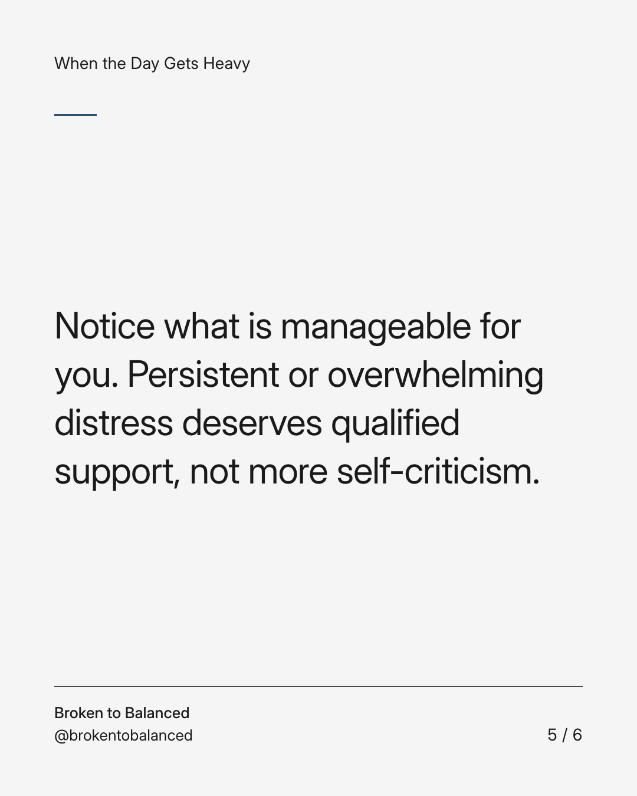
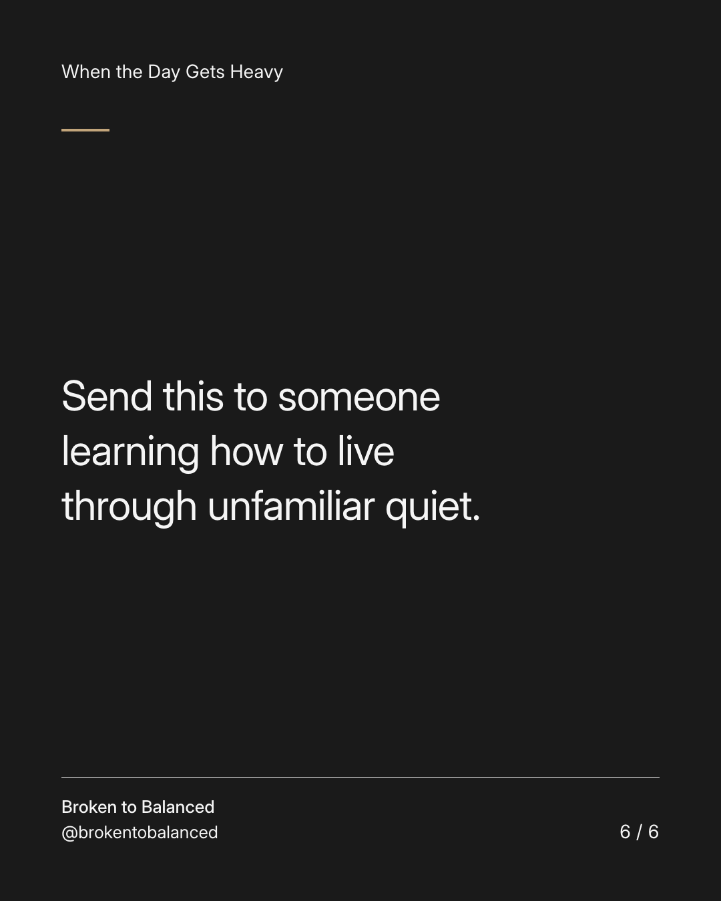

Exact text and accessibility text
The quiet evening needs a plan, not an accusation against yourself.
Slide 1 of 6. The quiet evening needs a plan, not an accusation against yourself.


Exact text and accessibility text
When the house feels different, “I should be enjoying this” may only add pressure.
Slide 2 of 6. When the house feels different, “I should be enjoying this” may only add pressure.


Exact text and accessibility text
Give the evening a little shape: something to eat, something to do, and one possible connection.
Slide 3 of 6. Give the evening a little shape: something to eat, something to do, and one possible connection.


Exact text and accessibility text
Keep it ordinary. A book, a short outing, a household task, or a call can be enough to choose from.
Slide 4 of 6. Keep it ordinary. A book, a short outing, a household task, or a call can be enough to choose from.


Exact text and accessibility text
Notice what is manageable for you. Persistent or overwhelming distress deserves qualified support, not more self-criticism.
Slide 5 of 6. Notice what is manageable for you. Persistent or overwhelming distress deserves qualified support, not more self-criticism.


Exact text and accessibility text
Send this to someone learning how to live through unfamiliar quiet.
Slide 6 of 6. Send this to someone learning how to live through unfamiliar quiet.
Exact caption
Plain-text fallback: select and copy the caption.